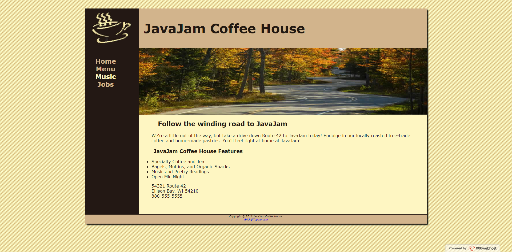
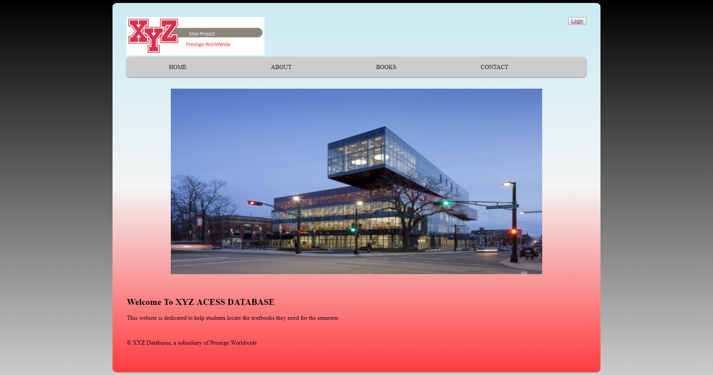

HTML and CSS

JavaJam is a case study website This website is taken from Web Development & Design Foundations with HTML5 by Terry Felke-Morris I used this case study to improve my HTML, CSS, and Github understanding.
PHP & MySQL

XYZ Access is a database based website
This website is dedicated to helping students figuire out what textbooks they are required to have
for their upcoming courses. It uses an Amazon Web Services MYSQL database, accessed with PHP code.